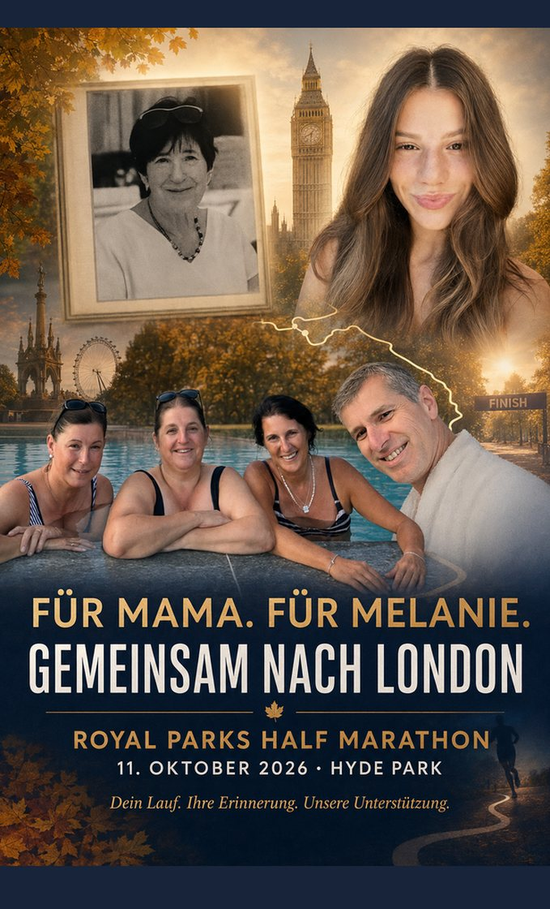

Hinflug · RK1694Fr 9. Okt 2026
LNZLinz
16:50
→
STNLondon Stansted
17:50
Für Mama. Für Melanie. Gemeinsam an der Strecke.
Am Sonntag, 11. Oktober läuft unsere Nichte Melanie den Royal Parks Half Marathon – einen Charity-Lauf im Gedenken an Mama. Robert, Heidi, Evelin und Steffi sind das ganze Wochenende dabei.

Anreise Freitagabend, Samstag St Albans und London, Sonntag der Lauf, Montag in aller Frühe zurück.
Landung Stansted, Privattransfer, Pub-Dinner in St Albans.
Cathedral und Charter Market, nachmittags London kompakt.
Früh in den Hyde Park, anfeuern, danach gemeinsam feiern.
Privattransfer 03:30, Rückflug ab Stansted 06:45.
Beide Flüge bestätigt. Alle vier mit kleinem Handgepäck (40 × 30 × 20 cm); Heidi, Evelin und Steffi zusätzlich mit je 10 kg Aufgabegepäck.
Reisende laut Buchung: Robert Preinfalk, Stephanie Schwab, Adelheid Preinfalk, Evelin Hetzmannseder. Bezahlt 671,52 € (PayPal). Fast-Track-Sicherheitskontrolle beim Rückflug für alle vier. Vor der Reise: Online-Check-in in der Ryanair-App, digitale Bordkarten sichern.
Ganze Unterkunft in St Albans, 3 Nächte, 4 Gäste. Check-in eigenständig über die Schlüsselbox.
Hin- und Rückfahrt zwischen Stansted und der Unterkunft werden privat organisiert – nicht über ÖPNV.
Richtwerte – Detailfahrpläne, Cheer Points und Race Guide 1–2 Wochen vor Abreise nochmals prüfen.
RK1694, Landung Stansted 17:50 Ortszeit.
Abholung am Flughafen, Fahrt zur Unterkunft.
Schlüsselbox, kurzer Spaziergang zur High Street, gemeinsames Abendessen im Pub.
Cathedral, mittelalterlicher Clock Tower und Charter Market (samstags 09:00–16:30).
Westminster → St James’s Park → Buckingham Palace → Trafalgar Square → Covent Garden / Soho.
Pub, West End oder Dinner in Covent Garden. Nicht zu spät – Sonntag wird früh.
Zu Fuß / Taxi nach St Albans City → Thameslink nach St Pancras (schnellste Fahrt ca. 22 Min.) → Piccadilly Line bis Hyde Park Corner.
Puffer einplanen – Menschenmengen und temporäre Sperren sind wahrscheinlich. Alternativstationen: Knightsbridge / Marble Arch.
Wellen bis etwa 09:30–09:45. Anfeuern nach Plan (siehe Melanies Lauf).
Event Village, spätes Frühstück / Lunch rund um Knightsbridge / South Kensington.
Kensington Gardens, Notting Hill oder Spaziergang am Serpentine Lake – je nach Melanies Energie.
Fertig machen, Unterkunft übergeben (Schlüsselbox).
Ziel: Ankunft Stansted spätestens ca. 04:00.
Ankunft Linz 09:40.
Meist mild und wechselhaft, oft grau mit Nieselregen. Für die Reise selbst zählt die echte Vorhersage – die erscheint unten automatisch, sobald der Zeitraum in Reichweite ist.
Beim Start um 09:00 sind oft nur 10–13 °C. Als Begleitung steht man lange – also Zwiebelprinzip: warme Schicht, wind- und regendichte Jacke, Mütze. Am Serpentine Lake und im Event Village zieht es zusätzlich.
Vorhersage wird geladen …
Detailliert: BBC Weather London · Google Wetter St Albans
OYSHO Royal Parks Half Marathon – 21,1 km durch vier Royal Parks, vorbei an Buckingham Palace, Big Ben und der Royal Albert Hall. Melanie läuft für den guten Zweck, im Gedenken an Mama.
South Carriage Drive – Melanie vor dem Start sehen und in die Welle schicken.
An der Strecke Position beziehen. Genaue Punkte aus dem Race Guide kurz vor der Reise.
Zieleinlauf im Hyde Park, danach am vereinbarten Treffpunkt sammeln.
Anreise zum Hyde Park: Thameslink St Albans City → St Pancras (~22 Min.) → Piccadilly Line bis Hyde Park Corner → ca. 15 Min. zu Fuß zum Event Village. Ziel: bis ca. 08:15 vor Ort.
Wird lokal in diesem Browser gespeichert – jede:r hakt die eigene Liste auf dem eigenen Gerät ab.